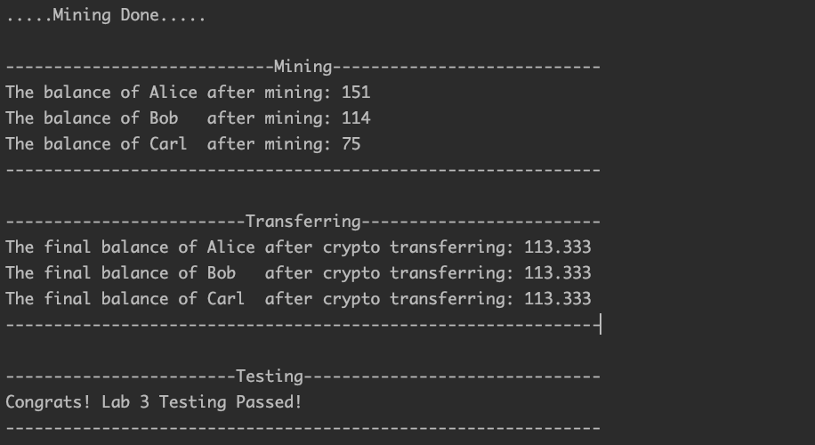

COMP2011 Lab 3
Introduction
In this lab, we will use function to implement more complex logic. You are required to implement the functions based on the pre-defined function definitions and finish the related logic by calling them in the main function properly. We provide the basic skeleton code for you to start this lab.Skeleton & Tasks Description
Skeleton
The scenario is about the cryptocurrency mining and transfer process. The students need to implement several functions> related to the mining and coin transferring processes, as well as the corresponding logic in the main function. In the main function, students choose the miner from [Alice or Bob or Carl] two times. Then, the selected miners will gain the mining rewards. Finally, the miners will transfer their coins to others. Finally, all three users will have the same amount of coins.
Tasks
- Task 1: Implementing the RandomInitBalance function which can return a random double type number between dMin and dMax. double RandomInitBalance(double dMin, double dMax);
- Task 2: Implementing the Mining function. This function returns a double-type value representing the mining rewards. double Mining(int selectedMiner, int blockNumber); 1. The function has two arguments, which are the selected miner and the number of blocks to be mined by the miner. Different miners will get different benefits. 2. Alice's basic reward is 10 coins per block. In case of sequential mining, the latter block yields 10 coins more the previous one. For example, if Alice mines 5 blocks, she will gain 10+20+30+40+50 coins as the reward. 3. Bob can gain 20 coins per block. For example, if Bob mines 5 blocks, he will gain 100 coins as the reward. 4. Carl's basic reward is 40 coins per block. In case of sequential mining, the latter block yields 5 coins less than the previous one. For example, if Carl mines 5 blocks, he will gain 40+35+30+25+20 coins as the reward. 5. The accumulated block reward will be recalculated after each round. For example, if we enter 3 blocks for mining and choose Alice as the miner twice, the block reward for Alice is like :[10,20,30,10,20,30].
- Task 3: Implementing the ComputeFinalBalance function. This function returns the average of the three double-type arguments. double ComputeFinalBalance(double a, double b, double c);
- Task 4: Implementing the ComputeTransferValuePBV function used to calculate the value to be transferred between two users(from fromBalance to toBalance) based on the final Balance. For example: ComputeTransferValuePBV(11, 9, 10) will return 1. It means the fromBalance(11) need to to transfer 1 coin to toBalance(9) when the finalBalance is 10. Hint: the real transferring process can be more complex, so think carefully about all possible scenarios. double ComputeTransferValuePBV(double fromBalance, double toBalance, double finalBalance);
- Task 5: Finishing the Crypto Transferring Process in the main function. Goal: Make three people have the same amount of coins by using the ComputeTransferValuePBV function. Please show the details of each transfer.For example, Alice transfers xx coins to Bob. 1. You cannot just assign the finalBalance to the each user. Please call the ComputeTransferValuePBV function. 2. The coin transferring process is similar to a bank transfer or you lending money to a friend, where some people's balance increases and some people's balance decreases. 3. The two miners that have been chosen will transfer coins to the remaining one, if their have more coins. 4. If the same miner is chosen twice, she or he will transfer money to the remaining two participants if she or he has more coins.
Sample Output
- In this example, the program first randomly assigns several coins to each miner. We can observe from the following figures that Alice has 1 coin, Bob has 14 coins, and Carl has 75 coins. (Hint: any random number between [1,100] is acceptable.)
- After the initialization process, we first enter 5. It means the miners will get the 5 block reward. Then, we choose Alice as the first miner by entering 1 and choose Bob as the second miner by entering 2.
- Then, we can observe that the balance of Alice increases from 1 to 151 and that of Bob increases from 14 to 114 after the mining process.
- Finally, we can observe that all of them gain the same balance of 113.333 after coin transferring process.

Grading Scheme
Each lab carries 3 points in total.
- By attending a lab, the student gets 1 point for attendance (but only if it is clear that the student does put in some effort).
- By completing the lab exercise correctly and answering TAs' question (if there is a question) correctly, the student gets the remaining 2 more points.
- Please turn on your camera when demonstrating your work to the TA.